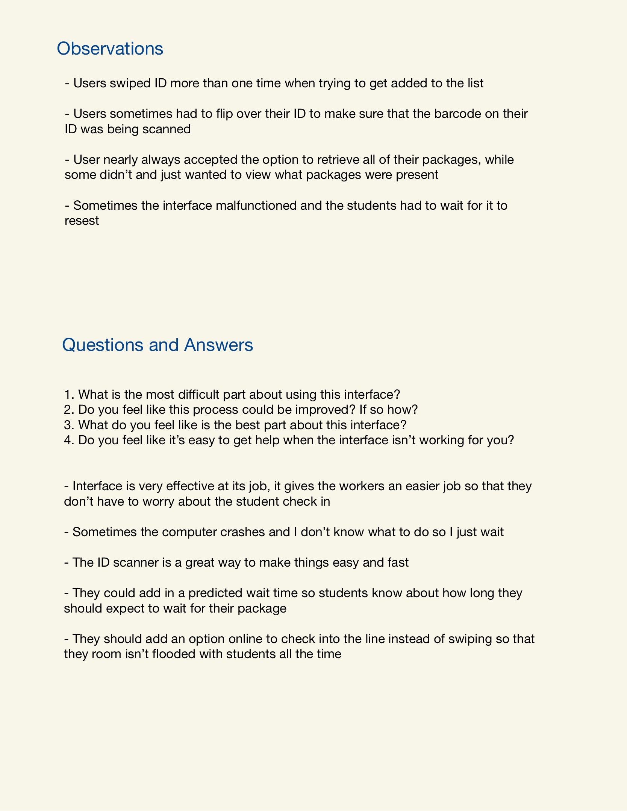
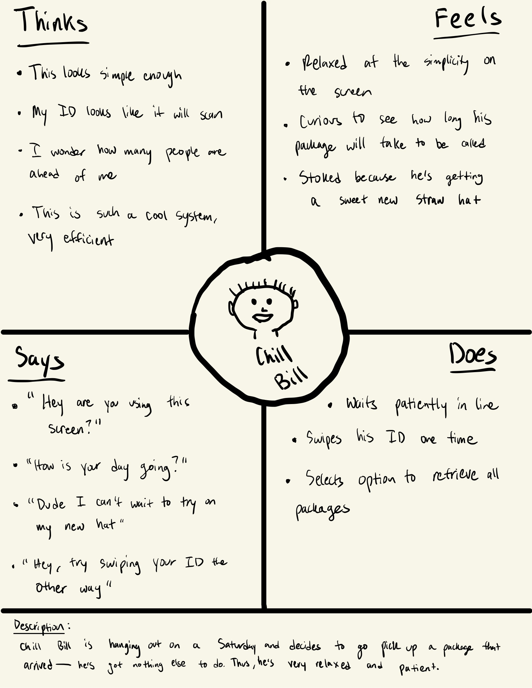
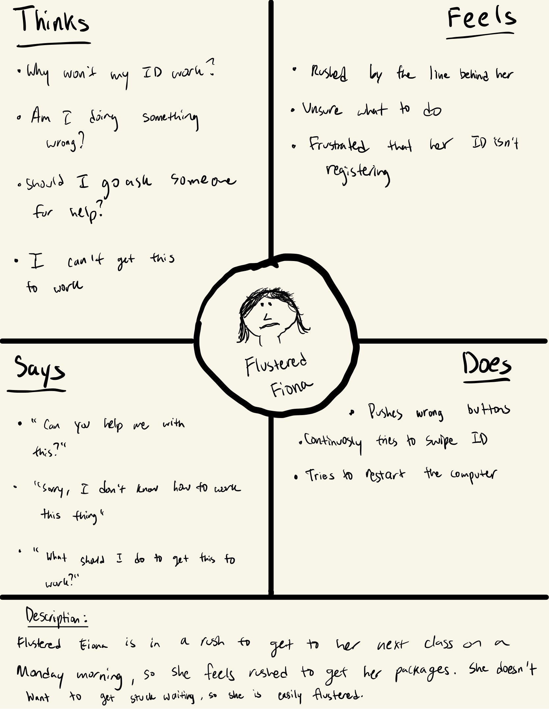
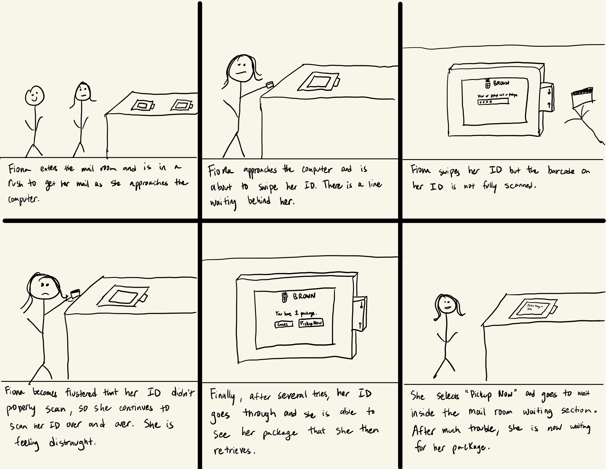

This is part 1 of the assignment in which we were required to choose an interface and describe it.
This is part 2 of the assignment in which we were required to observe users using the interface and describe what we saw. We were also required to list the questions we asked and the responses we recieved.
 This is part 3 of the assignment in which we were required to create two different personas of individuals using four-quadrant empathy maps. Here, we have two personas (Bill and Fiona) where each of their characters decsribes, generally, two different kinds of people I observed using this interface.
Finally, this is part 4 of the assignment in which we were required to create a storyboard of a persona's journey from start to end while using the interface. Here, I chose Fiona as the persona to illustrate. Although the art isn't perfect, it depicts the process of their experience with the interface.